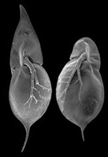
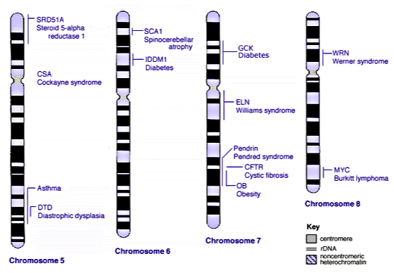

BIOL 210 Problem Set 6 KEY
Week 6, Oct 7-11
ps6key.RmdQuestion Key
- Consider the four-o’clock plant (Mirabilis jalapa), in which there are two alleles for flower color, R (homozygotes have red flowers) and W (homozygotes have white flowers). A homozygous plant is also called “true-breeding” because all of its gametes will inherit the same allele. And if you cross two true-breeding red-flowered plants, then you know the offspring will “breed true”; the offspring will all have red flowers like their parents. If you cross a true-breeding red-flowered plant with a true-breeding white-flowered plant, the offspring have pink flowers.
- Write out the genotypes of the two true-breeding parents and of the offspring. Which are homozygous? Heterozygous?
- What is the name for the pattern of inheritance of the phenotypes encoded by the R and W alleles?
- Why does the heterozygote have pink flowers instead of red or white?
- Do you make any connections between this example and topics we learned earlier in the course?
-
As discussed in the content video on Independent Assortment, phenotypic plasticity is the phenomenon in which a single genotype can produce different phenotypes, depending on external conditions. For example, water fleas (Daphnia spp., pictured) are zooplankton, microscopic aquatic animals commonly found in ponds and lakes. They eat algae and are eaten by juvenile fish. If a female Daphnia lives in a pond also inhabited by fish, she will produce clonal babies (by parthenogenesis) that grow head and tail spikes (on the left in image). But if that same mom (genetically identical) lives in a pond without fish, she will have clonal babies with rounded heads and short tails (on the right in image).

- How do you think Daphnia moms are able to change the way in which their babies develop to either have or lack head and tail spikes? (Think about how this relates to previous topics.)
- Throughout the course, we’ve actually seen quite a few examples of phenotypic plasticity, though I didn’t give them that name at the time. Find at least 2 examples that we have used earlier in the course which also happen to be examples of phenotypic plasticity. See if you can find one of them in a unicellular organism!
Since the babies develop inside the female Daphnia, they will be able to receive signals from her (and she will have deposited proteins in the cytoplasm of the egg cells she produced). These signals could include transcription factors that cause epigenetic changes in the genomes of the babies so that they “turn off” the round-head signal cascade and “turn on” the spiky-head signal cascade. This will be a type of epigenetic change that results in a permanent change in the babies (they can’t change back to round-heads if it turns out there aren’t any fish). However, if fish disappear from the environment, they will send those signals to their own babies and may have offspring with rounded heads. Here are some examples: From Mitosis and Binary fission video, the (unicellular) bacterium Caulobacter has two phenotypes: a flagellated swarmer cell and a stalked cell. The swarmer cell eventually settles down attached to a surface and switches phenotypes to be a stalked cell. Also in Mitosis and Binary Fission video, the (unicellular) bacterium Bacillus licheniformis has two types of cells, vegetative and endospores. These are phenotypically and metabolically quite different (endospores can be dormant to survive bad conditions). Temperature-dependent sex determination (like in the red-eared slider turtle, Transcription video) is another example: which gonads develop depends on the environmental conditions. So the same exact genome can develop as either male or female. People who have the HbS allele for betaglobin have globin molecules that can be the usual protein complex that floats freely OR under low blood oxygen, their globin molecules polymerize to make rigid fibers that warp the shape of the red blood cell (to be a sickle-cell, Translation video).
You are a plant breeder studying two phenotypes in the trout lily plant: flower color and leaf pattern. Your studies lead you to believe that the flower color phenotype is determined by a single gene with two alleles (yellow, A, and white, a) and the leaf pattern phenotype is also determined by a single gene with two alleles (spotted, B, and plain, b). You have a true-breeding plant that has white flowers and spotted leaves (aaBB). You do not know the genes that are responsible for these two phenotypes but have inferred the genotype of your true-breeding plant with white flowers and spotted leaves.
- A fellow lily-breeder sends you a true-breeding plant that has yellow flowers and plain leaves. What is the genotype of this plant? (Hint: what does true-breeding mean?)
- You cross your white and spotted plant with the yellow and plain plant. If yellow is dominant to white and spotted is dominant to plain, what will be the genotype and phenotype of the offspring (the F1s)?
- Imagine you wanted to figure out whether the flower color and leaf pattern genes are linked. What cross would you need to carry out? What phenotypic ratio would you expect to observe in the cross if the genes are NOT physically linked? (Hint: You must use the plants you already have available, which does not include an aabb individual.)
white, spotted will be 18.75% (3/16) where 1/16 are aaBB and 2/16 are aaBb white, plain will be 6.25% (1/16) where 1/16 are aabb yellow, spotted will be 56.25% (9/16) where 1/16 are AABB, 2/16 are AABb, 2/16 are AaBB, and 4/16 are AaBb. yellow, plain will be 18.75% (3/16) where 1/16 are AAbb and 2/16 are Aabb.
white, spotted will be 25% (1/4), all aB/aB white, plain will be absent, 0% because no ab gametes are made yellow, spotted will be 50% (2/4), all aB/Ab where either gamete could come from either parent so this is 50% of the total zygotes created yellow, plain will be 25% (1/4), all Ab/Ab
Linkage between genes arises because a single chromosome often contains a very long sequence of DNA that includes many genes. Given that humans have an estimated 20-25 thousand genes and n = 23 different chromosomes (2n = 46), we might expect that each chromosome is likely to contain around 1000 genes (in fact, some chromosomes only contain a few dozen genes, others have more than 2000).
Below are models of a few human chromosomes (in condensed form), noting along the length of the chromosome where different genes are located for human autosomes 5 through 8. The labeled genes are ones where some versions (alleles) of that gene are known to cause disease. The dark bands on the chromosomes indicate areas that are usually heterochromatin (highly condensed). Use the figure to answer the following questions.

- On chromosome 7, the OB gene encodes the hormone leptin, which helps regulate energy balance (wild-type allele B). The b allele for this gene produces non-functional leptin molecules which increase risk of obesity in homozygotes (bb). Based on the figure, the OB (Obesity) gene is physically linked to which other genes?
- Consider the CFTR gene on chromosome 7, which encodes a protein that transports chloride and thiocyanate ions across the cell membrane (wild-type allele F). The mutant f allele for this gene is a deletion that causes protein-misfolding, leading to cystic fibrosis in homozygotes (ff) but no effect in heterozygotes (Ff). If a person was heterozygous for both the OB gene and the CFTR gene (BbFf), and the genes were NOT linked, what would be the chance that this person’s child would inherit BOTH the b and f alleles from this parent?
- Because the OB and CFTR genes are linked, we need to think through some additional information to figure out how this affects the chance of an offspring inheriting mutant alleles for both genes. Consider 2 scenarios:
- Scenario 1: Jack’s parents have the genotypes BBff (mom) and bbFF (dad), giving Jack the genotype BbFf. If this is Jack’s genotype, and no crossing-over occurs between the genes, can Jack’s child inherit both the b and f alleles from Jack? Explain.
- Scenario 2: Alex’s parents have the genotypes bbff (mom) and BBFF (dad), giving Alex the BbFf genotype. If no crossing-over occurs between OB and CFTR, can Alex pass on both the b and f alleles to one child?
- Now consider the children of parents with the genotypes Bf/bF and Bf/bF. Assuming that these genes are so tightly linked that crossing-over does not occur between them,
- What’s the chance that their child has a high risk of obesity?
- What’s the chance that their child inherits a predisposition for cystic fibrosis?
- What’s the chance that their child is at high risk for both obesity and cystic fibrosis? How would your response change if the genes were NOT linked (calculate the probability)?